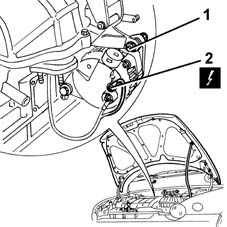
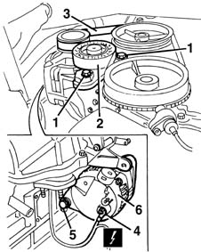
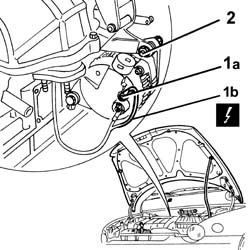
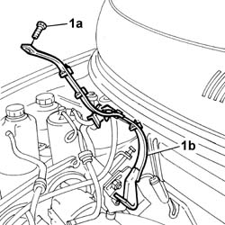
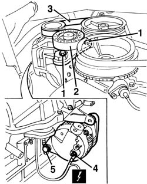
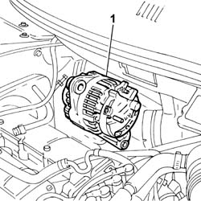
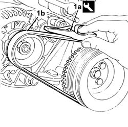

5530A10 alternator - r+r
- Path
- Procedures > 55 ELECTRICAL EQUIPMENT > 5530 CURRENT GENERATOR > 5530A alternator and components > 5530A10 alternator - r+r
- Kind
- repair procedure (removal / refitting; the operation number is the code)
- Applies to
- engines: 1.6 16v; all production periods
- Interactive page
- https://sloeber94.github.io/elrnDB-fMltpl/en/#/2891904
Applies to: engines: 1.6 16v; all production periods
 Removing
Removing
 Refitting
RefittingPosition the vehicle on the lift and open the bonnet lid.
1. Working from the top of the engine compartment, undo and remove the upper bolt fixing the alternator.
2. Disconnect the upper electrical connection.
 | Name | Connector |
|---|---|---|
2 | Alternator |

Applies to: engines: 1.6 16v; all production periods
Raise the car.
1. Undo the bolts fixing the belt tensioner.
2. Remove the belt tensioner.
3. Remove the belt from the alternator pulley.
4. Disconnect the lower electrical connection.
| Name | Connector |
|---|---|---|
4 | Alternator |
5. Undo the bolt and remove it.
6. Recover the alternator.

Applies to: engines: 1.6 16v; all production periods
Refitting
RemovingCheck that the alternator is not damaged.
Position the alternator and fix it using the bolts.
 | Fastening | Component | Ø | Value (daNm) |
|---|---|---|---|---|
- | Bolt | ALTERNATOR ASSEMBLY | M10 | 5 |
| Fastening | Component | Ø | Value (daNm) |
|---|---|---|---|---|
- | Bolt | ALTERNATOR ASSEMBLY | M12 | 7 |
Connect the electrical connections .
1092B50 alternator/air conditioner compressor drive belt - adjust tension
Applies to: engines: 1.6 16v; all production periods; only with equipment: Euro 3
Removing
Refitting- 4450B04 right front wheel r r
1080B62 catalytic converter - r + r
1. Undo the fixing nuts (1a) and disconnect the alternator wiring (1b).
| Name | Connector |
|---|---|---|
1b | Alternator |
2. Undo and remove the upper alternator fixing bolt

Applies to: engines: 1.6 16v; all production periods; only with equipment: Euro 3
1. Tighten the fixing bolt (1a) and remove the bracket (1b) securing the rear Lambda sensor wiring.

Applies to: engines: 1.6 16v; all production periods; only with equipment: Euro 3
Raise the car.
1. Undo the bolts fixing the belt tensioner.
2. Remove the belt tensioner.
3. Remove the belt from the alternator pulley.
4. Disconnect the lower electrical connection.
| Name | Connector |
|---|---|---|
1b | Alternator |
5. Undo the lower alternator fixing nut and release it from its mounting.

Applies to: engines: 1.6 16v; all production periods; only with equipment: Euro 3
Lower the vehicle.
1. Working from the top of the engine compartment, remove the the alternator.

Applies to: engines: 1.6 16v; all production periods; only with equipment: Euro 3
Refitting
RemovingPosition the complete alternator in its housing and secure it by tightening the fixing bolts.
Position the rear Lambda sensor wiring mounting bracket and tighten the upper fixing bolt.
Fit the new alternator drive belt on the pullies.
1. Use tool (1a) and check that the tension of new belt (1a) is within the recommended values.
 | Name | Country |
|---|---|---|
1a | Torque wrench | 1.895.762.000 |
 | Measurement | Value | |
|---|---|---|---|
- | Alternator drive belt tensioning (daNm) | 30 - 35 | |
New belt (-) | - | ||

Applies to: engines: 1.6 16v; all production periods; only with equipment: Euro 3
Tighten the alternator bolts to torque.
| Fastening | Component | Ø | Value (daNm) |
|---|---|---|---|---|
- | Bolt | ALTERNATOR ASSEMBLY | M10 | 5 |
| Fastening | Component | Ø | Value (daNm) |
|---|---|---|---|---|
- | Bolt | ALTERNATOR ASSEMBLY | M12 | 8 |
Connect the alternator wiring and tighten the fixing nuts.
| Name | Connector |
|---|---|---|
- | Alternator |
| Fastening | Component | Ø | Value (daNm) |
|---|---|---|---|---|
- | Nut | ALTERNATOR ECU LEAD/S | M8 | (Cable B+) 2.4 |
1080B62 catalytic converter - r + r
- 4450B04 right front wheel r r